Completed Academic Project
JobConnectSA
Connecting graduates with SMEs through a practical recruitment and work-readiness platform. The system supports graduate profiles, applications, CV preparation, employer recruitment tools, admin oversight, and reporting.


Project overview
Built forgraduateopportunity.
JobConnectSA is a role-based web platform designed to connect graduates seeking work experience with small and medium enterprises that need affordable skilled support.
The platform gives graduates a place to create profiles, build CVs, prepare for interviews, search opportunities, save jobs, and apply. Employers can create profiles, post adverts, add screening questions, filter applications, shortlist candidates, message applicants, and manage recruitment more efficiently.
Real-world context
WhyJobConnectSA exists.
A graduate may leave university with knowledge, skills, and motivation, but still struggle to find work because many entry-level roles ask for previous experience.
On the other side, many SMEs need support in areas such as administration, technology, marketing, data, customer service, and operations. They may not always have large recruitment budgets or the same hiring structures as bigger companies.
JobConnectSA responds to this gap by creating a platform where graduates can become more visible and prepared, while SMEs can access early-career talent in a structured and cost-effective way.
Graduates need experience. SMEs need accessible support.
Many graduates struggle to access entry-level opportunities because they lack work experience, professional visibility, or direct access to employers. At the same time, SMEs often need skills but may not have strong recruitment systems or large HR departments.
A role-based platform for recruitment and readiness.
JobConnectSA gives graduates and SMEs one place to meet around work opportunities. The system supports preparation, applications, recruitment workflows, shortlisting, communication, admin oversight, and reporting.
Key features
Built around the three main user roles.
Graduate Features
- Graduate profile creation
- CV builder and document uploads
- Job search and applications
- Saved jobs
- Interview preparation support
- Communication from employers
Employer Features
- Employer profile creation
- Advert and job posting
- Screening questions
- Application filtering and management
- Candidate shortlisting
- Messaging, voice notes, and interview scheduling
Admin Features
- Employer account management and approval
- Application and activity monitoring
- Reports and analytics
- PDF and Excel exports
- Advertisement management
- Subscription management
How the system works
Clear flows for graduates, employers, and admins.
From profile to application.
- Register or login
- Create profile
- Build or upload CV
- Search and save opportunities
- Apply for jobs
- Prepare for interviews
From business profile to shortlist.
- Register or login
- Create employer profile
- Wait for admin approval
- Post adverts or jobs
- Filter applications
- Message and schedule interviews
From oversight to reporting.
- Login
- Approve employer profiles
- Monitor applications and activity
- Manage adverts and subscriptions
- View reports and analytics
- Export reports
Tech stack
HowJobConnectSA was built.
JobConnectSA was built as an ASP.NET Web Forms system with SQL Server handling user accounts, job posts, applications, documents, messages, reports, adverts, and platform activity.
ASP.NET Web Forms + C#
Supported role-based pages, sessions, application logic, and user workflows.
SQL Server
Stored users, employers, jobs, applications, documents, messages, adverts, and reports.
Bootstrap 5 + JavaScript
Built responsive pages, forms, dashboards, and interactive user interface behavior.
ClosedXML + iTextSharp + OpenXML
Supported Excel exports, PDF reports, document handling, and reporting workflows.
ASP.NET Web Forms
C#
.NET Framework 4.7.2
SQL Server
Bootstrap 5
JavaScript
jQuery
Visual Studio
Screenshots
Current screens from the project.

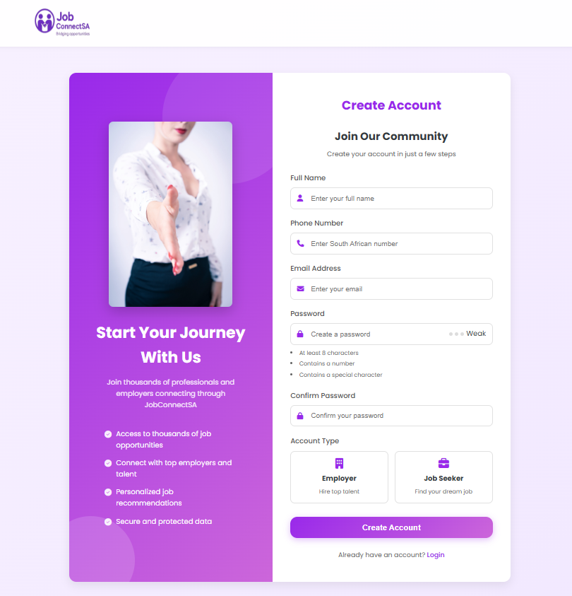
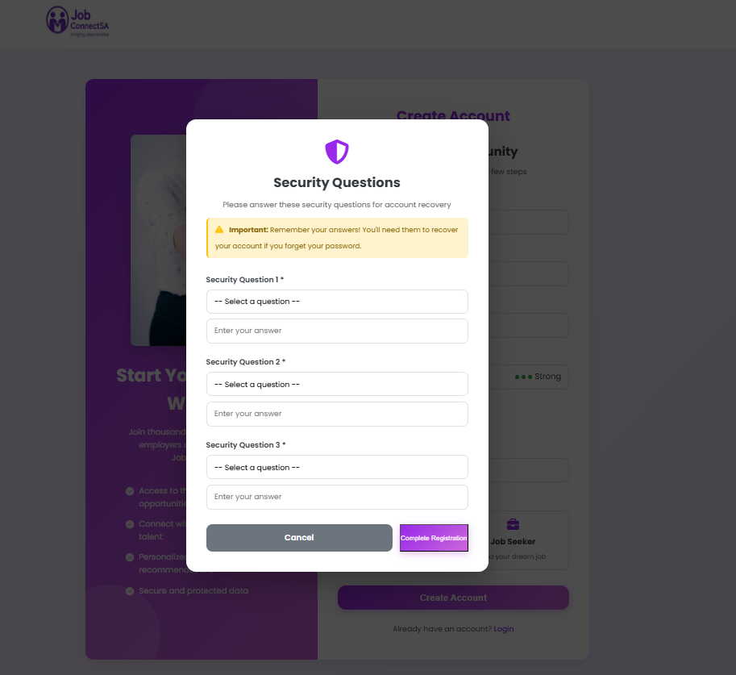
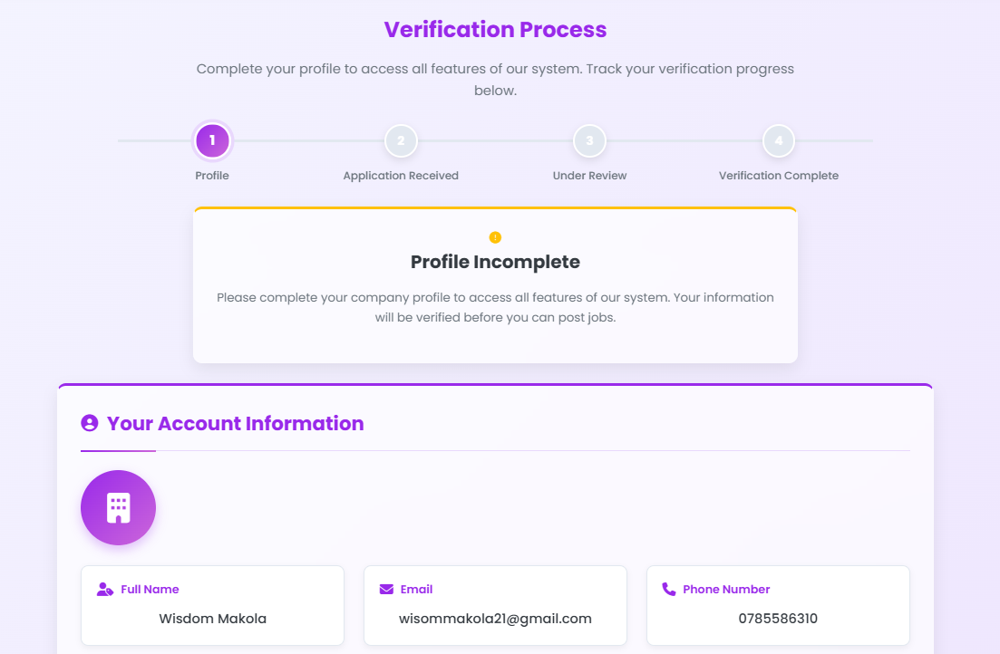
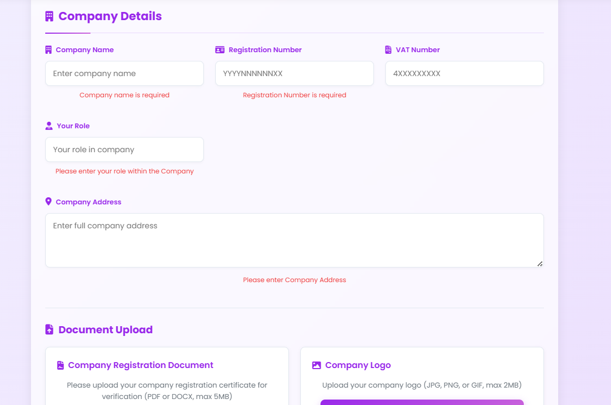
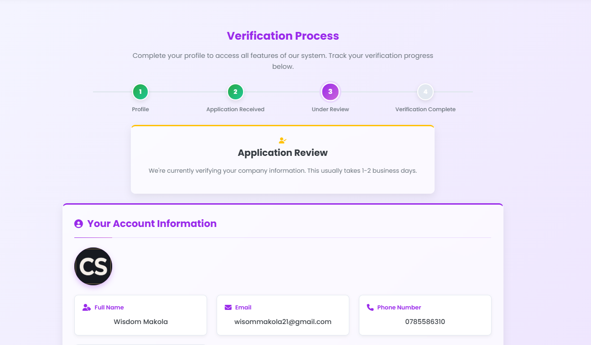
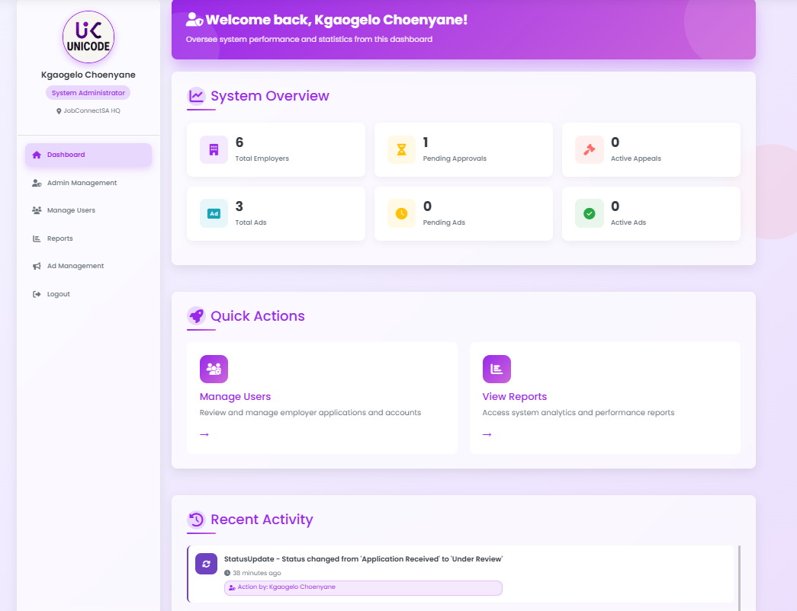
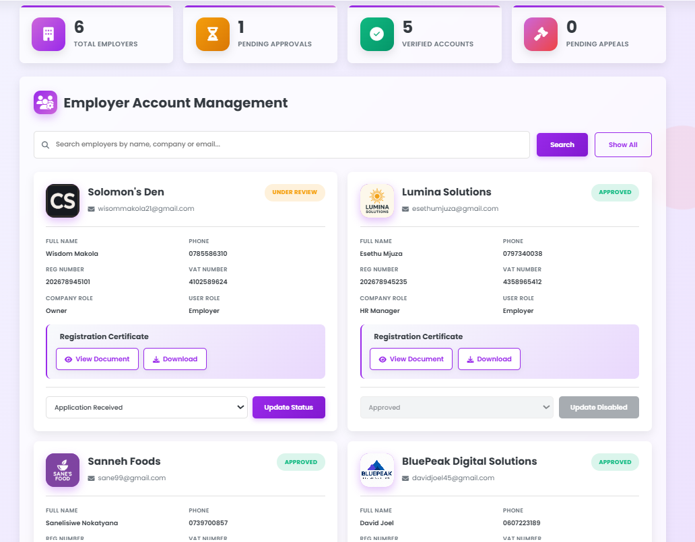

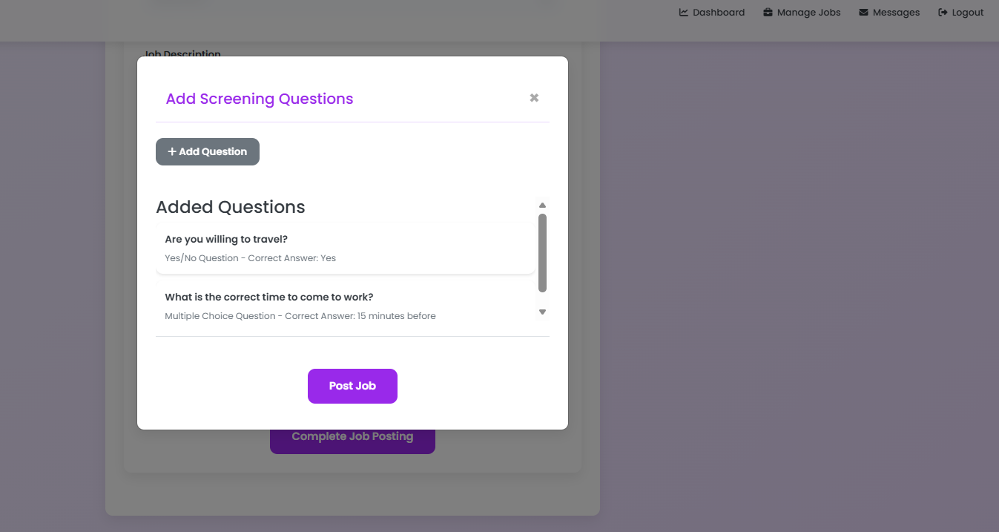
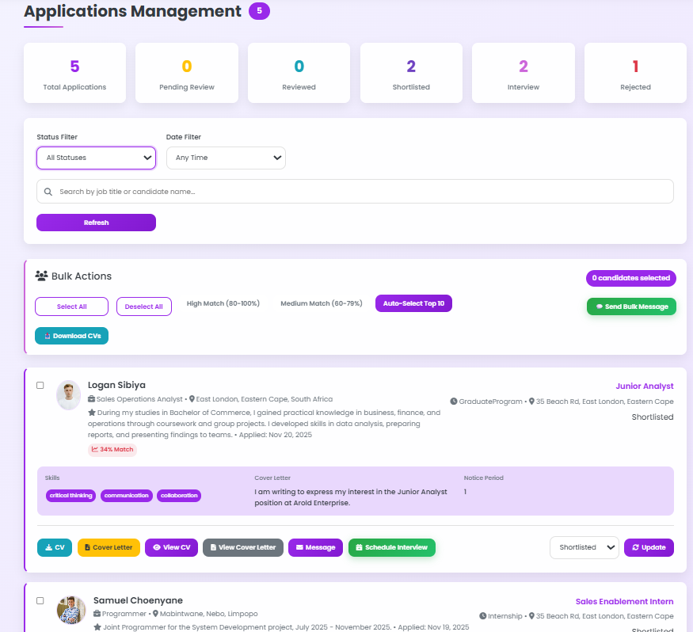
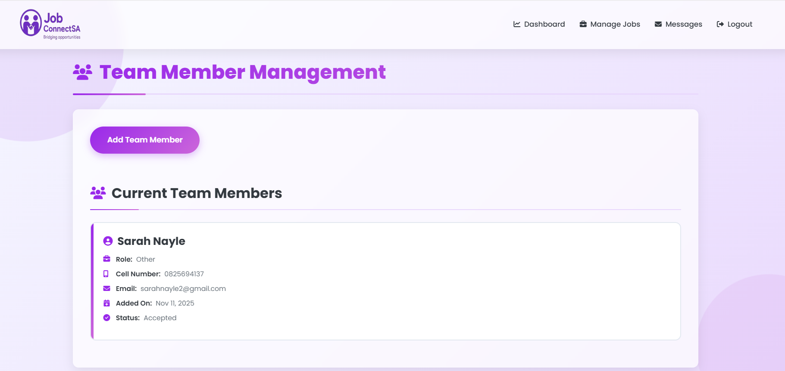

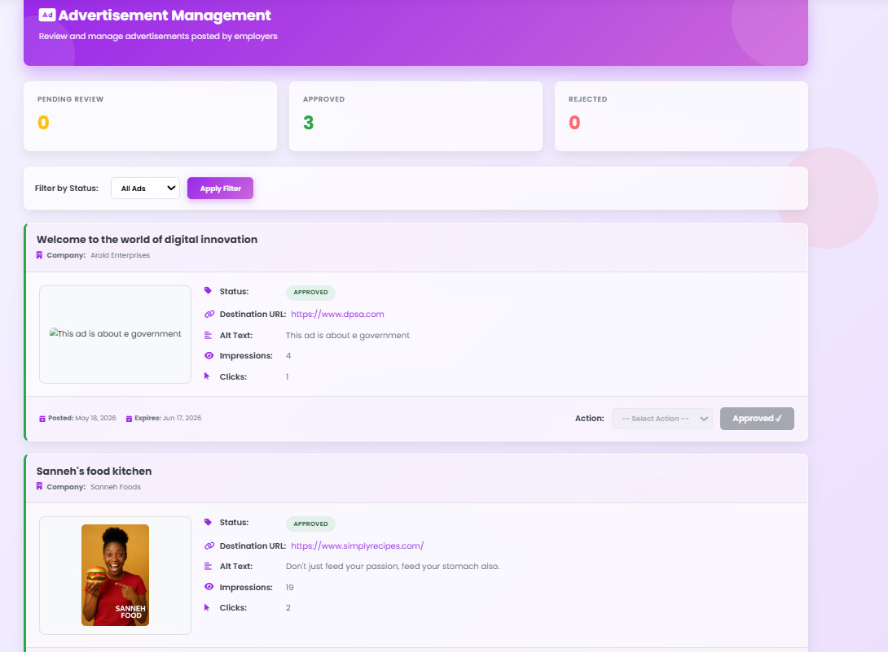
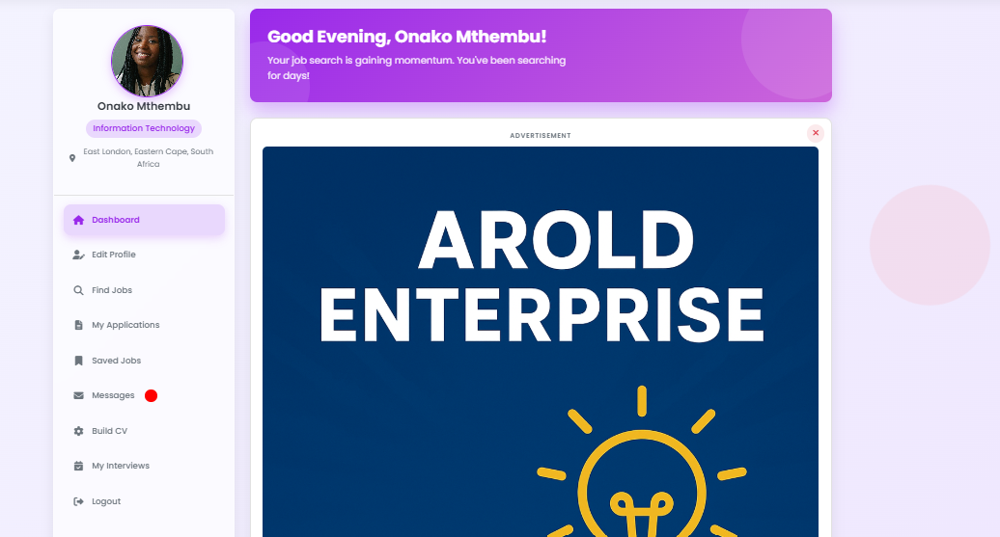
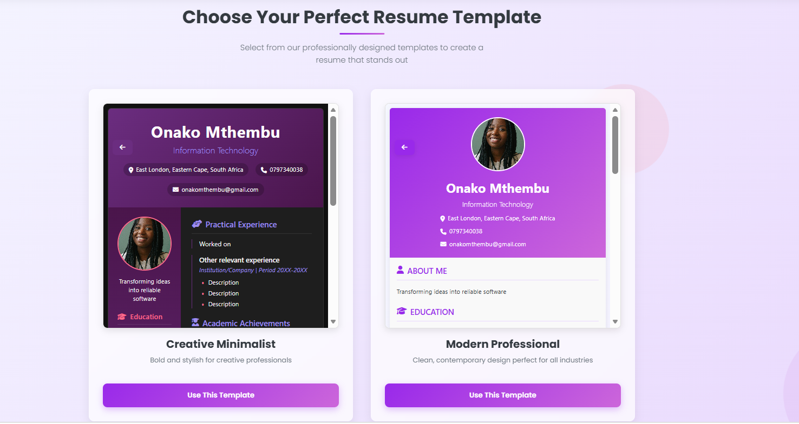
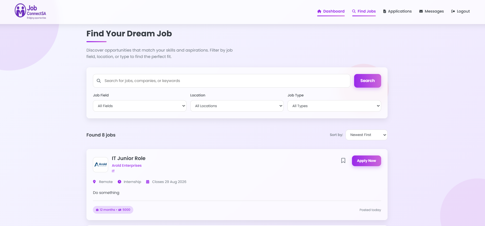
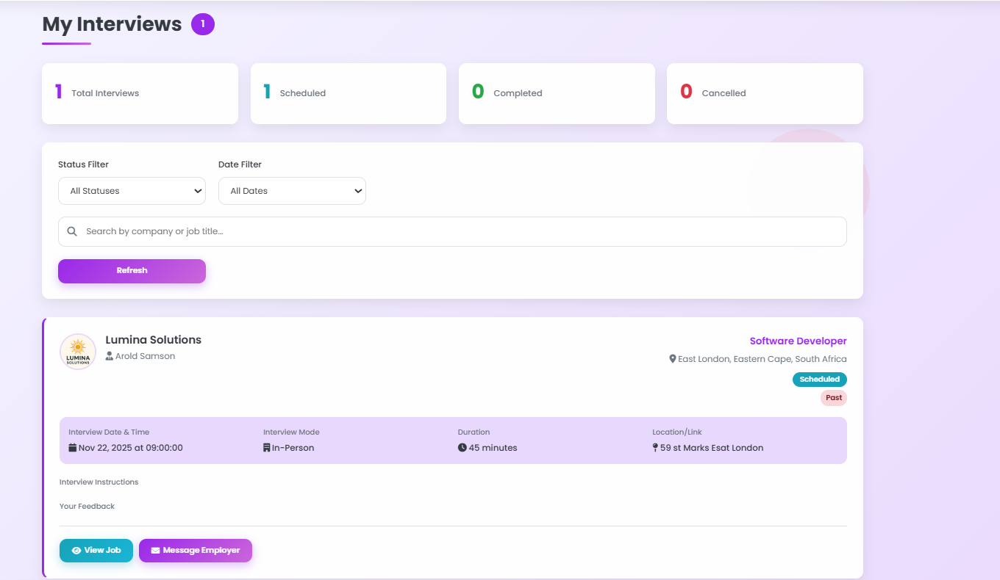


Connecting systems work with employability value.
JobConnectSA demonstrates how Information Systems can support graduate visibility, work-readiness, SME recruitment, structured applications, filtering, shortlisting, reports, and document exports.
A working recruitment and work-readiness platform concept.
The project demonstrated role-based access, job posting, job applications, candidate management, document handling, communication, reports, and recruitment workflow support.
Next step